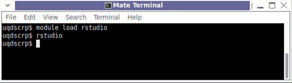
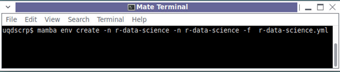
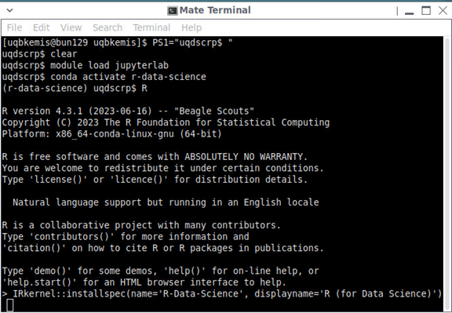
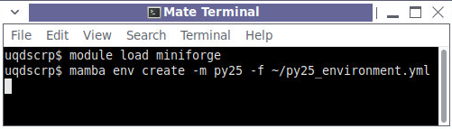
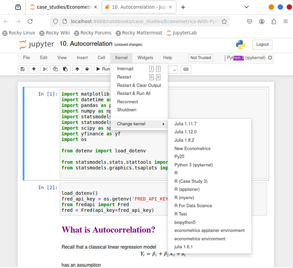
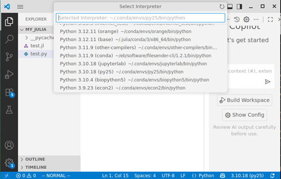
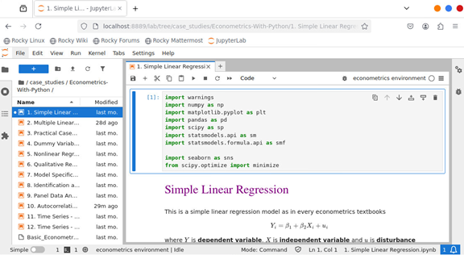

Suggestions for using OnBunya for Data Analysis
UQ provides several virtual desktop services to researchers through the OnBunya website. An overview of these services can be found in the HPC OnDemand Guide. The diagram below shows the current options available through the service.

Our Primary focus in this document is help configure your environment so that you can start coding in languages such as R, Python or Julia in either an Integrated Development Environment or via Jupyter Notebooks and highlight some common issues which you may encounter on Bunya.
We will concentrate on the Desktop and Jupyter Application provided. The current VS Code option is an implementation of Code Server, a web-based IDE based on the Open-Source elements of Visual Studio code, which has the look and feel of Visual Studio Code but lacks many of the extensions available through Microsoft’s extension marketplace. For this reason, we suggest you consider installing your own version of VS Code in a Desktop until the Application supports such extensions. There is no interactive option for RStudio, unlike on similar services such as NCI ARE, so we will configure this through the Desktop interface as well.
Integrated Development Environments
We will consider two options, the RStudio Desktop and VS Code. We will demonstrate how to start the applications but will not go into details on how to configure the IDEs themselves. The following articles may provide additional information on using the IDEs with your chosen language.
VS Code
Getting Started with Python in VS Code
RStudio
RStudio Desktop
Since the beginning of 2025, it is no longer possible to download a pre-compiled version of RStudio desktop for the version of the Operating System currently installed on Bunya, so if we want to use the RStudio Desktop, we must choose between downloading the December 2024 version of RStudio Desktop and configuring it with our own version of R or using an Apptainer container with a more recent release. The Research Computing Centre maintains several containers in the directory /sw/containers/local/rcc/. They are available under General Apps in the Bunya Apps directory.

Alternatively, you can access these containers via the module system.

You will notice that some versions of RStudio have many additional packages installed by default. These have the potential to save you space in your home directory, which is often at a premium for many users. Very occasionally, you may have issues with installing R packages which have been written in other languages such as C or Fortran, because the containers lack some common development libraries. In such situations, you should look at installing RStudio yourself; we give an example of how to do this later in the document.
Visual Studio Code
As mentioned earlier, we favour installing our own personal version of VS Code. We can use the Firefox browser from a standard desktop from onBunya to download the tar.gz file for x64 from the download link, then open a terminal and untar the data into a directory of our choice, for example

Next, we try starting up with the command
~/apps/VSCode-linux-x64/bin/code
If that is successful, we can go ahead and delete the tar.gz file that we downloaded and create a desktop entry for Virtual Studio Code by creating a file called ~/.local/share/applications/vscode.desktop containing
[Desktop Entry]
Name=Visual Studio Code
Exec=/home/YOUR USERNAME/apps/VSCode-linux-x64/bin/code
Type=Application
Icon=input-keyboard
Categories=Development;
Here you should see an item appearing under the Programming menu called Visual Studio Code.

Jupyter Notebooks
You can start a Jupyter notebook by clicking on the link in the Bunya Apps -> General Apps Menu. This will automatically start up the Firefox web browser pointing to the URL used by your Jupyter notebook session.

This is the recommended way to work with Jupyter Notebooks from within a Desktop session. However, it does differ from the interface you see if you use the Jupyter Interactive session which uses Jupyter Labs. Jupyter Labs is available through the module system, and we can create our own menu entry for Jupyter Labs if we prefer to have consistent experience in both the desktop and the interactive application. One approach is to create a wrapper script which loads the module and then starts jupyter-lab. For example, create a directory called ~/apps/wrappers and add a script called jupyterlab_wrapper.sh containing
#!/bin/bash
module load jupyterlab
exec jupyter-lab
then make the script executable with the command

now we can create a menu item with a script called ~/.local/share/applications/jupyterlab.desktop containing
[Desktop Entry]
Name=JupyterLab
Exec= mate-terminal --window --title "Jupyter Lab" -e '/bin/bash -c "/home/YOUR USERNAME/apps/wrappers/jupyterlab_wrapper.sh "'
Type=Application
Icon=/sw/local/share/icons/jupyter.ico
Categories=Development;
Notice that we are starting Jupyter Lab inside a mate-terminal. This is not entirely necessary for the operation of Jupyter, but allows us to see error messages generated, which is useful for debugging issues with the custom kernels we will be creating.
The current jupyterlab module was built using EasyBuild, and as a result contains several additions to the LIBRARY PATH which can conflict with some of the example development environments which we will be creating. However, if you are intending to use the default Python environment provided with Jupyterlab and add packages packages with thepip install –user command, then this is the option we recommend for you.
An alternative is to create our own Conda environment for Jupyterlab. Here again, we could use a wrapper script to load the Conda environment, although this approach may have similar drawbacks to the module-based approach with libraries from the Conda environment taking precedence in your library path. We can use a workaround for the path issue by calling the jupyter-lab program without loading the full Conda environment. However, there are trade-offs with this approach, while the Python environment is consistent, we are not loading full environment and so we may not have access to other programs and libraries from the environment. This can lead to issues installing additional packages to the default python environment (although you can work around this issue by loading the Conda before installing new packages). We recommend this approach if you intend to use your own Python, R or Julia kernels as we will demonstrate in our case studies.
There are several modules available for managing Conda environments, the default being anaconda, but we recommend using Miniforge. We start by loading the most recent Miniforge module

At the time of writing, the mamba command does not appear to include a suitable environment directory in its path. We can check this with the command mamba config list envs_dir. Make sure that it contains a directory you can write to such as ~/.conda/envs and consider doing something similar for pkgs_dirs.

Create an environment yaml file to build our environment for example we could create a file called jupyterlab_environment.yml containing
name: jupyterlab
channels:
- conda-forge
- bioconda
dependencies:
- jupyterlab
- ipykernel
- scipy
- scikit-learn
- pandas
- dask
- vaex
- matplotlib
- seaborn
- plotly
- altair
Then we can build the environment with the command
mamba env create -n jupyterlab -f jupyterlab_environment.yml
Then we create our ~/.local/share/applications/jupyterlab.desktop file
[Desktop Entry]
Name=JupyterLab
Exec= mate-terminal --window --title "Jupyter Lab" -e '/home/YOUR USERNAME/.conda/envs/jupyterlab/bin/jupyter-lab "'
Type=Application
Icon=/sw/local/share/icons/jupyter.ico
Categories=Development;
People might be wondering why we are not advocating an approach based upon using a Python Virtual Environment using the python3 executable provided with the Operating System. This would be the cleanest method to create the jupyterlab environment, since it will be consistent with the libraries and other packages installed with the operating system and is the approach we take on NCI GADI. However, we are limited to the versions of Python installed with the Operating System and it appears that only 2 versions of Python3 are maintained on Bunya. At the time of writing they are Python 3.6 and Python 3.11. The safest option would be to use version 3.6 which is guaranteed to be available, but is old, and this limits the versions of certain packages available to us. From this perspective version 3.11 is a far superior option, but we can’t guarantee it won’t be removed when a newer version becomes available as a Rocky Linux Package. In addition, RCC have only installed a small subset of development packages provided by the Operating System. This limits our options for compiling additional software without the aid of third-party tools such as Conda, Apptainer or EasyBuild. This differs from the approach taken by NCI GADI, where they advocate using the compilers provided by the Operating System and as a result they maintain a larger selection of development packages.
Programming Language Environments
R
Most people will use RStudio to R code on Bunya, but it is also possible to load R itself using one of the modules provided. In such cases, we recommend you choose one of the modules from the /sw/local/rocky8/noarch/rcc/modules directory, which are the same versions of R used with RStudio, rather than default module which is compiled using easybuild.
Sometimes we want to create our own custom environment for a particular project so that we can better manage the environment and record its state so that we can distribute it to other researchers. In such cases, we can use mamba to build and maintain our R environment and then use that environment with Jupyter, VS Code or RStudio. As an example, let us create an environment called r-data-science where we will install R and additional recommended packages from the articles Top 10 Essential R Packages for Data Science and 15 Essential packages in R for Data Science. We start by creating a file called r-data-science.yml containing
name: r-data-science
channels:
- defaults
- conda-forge
- r
dependencies:
- r-base
- r-ggplot2
- r-ggraph
- r-tidyr
- r-dplyr
- r-tidyquant
- r-shiny
- r-caret
- r-tidyverse
- r-e1071
- r-plotly
- r-knitr
- r-mlr3
- r-xgboost
- r-xml
- r-lubridate
- r-stringr
- r-tidymodels
- r-purrr
- r-randomForest
- r-irkernel
- jupyter
Then we load the miniforge environment as before and create the environment with the command

Then we load the jupyterlab module, activate the r-data-science environment, start R and register the IRKernel, so that we can use it in future Jupyter sessions.

We should now be able to change the version of R used by RStudio by exporting the environment variable RSTUDIO_WHICH_R to point to ~/.conda/envs/r-data-science/bin/R. Unfortunately, this doesn’t appear to work with the containerized version of RStudio we have been using up until now. Instead, we need to download an older version of RStudio Desktop from AWS and untar it into a suitable directory. In our case, we will use ~/apps. Then we run the following to use this version of R with
export RSTUDIO_WHICH_R=~/.conda/envs/r-data-science/bin/R
~/apps/rstudio-2024.12.1+563/rstudio
(Note: If this is the only version of R we ever intend to use, then we could consider adding it to our ~/.Renviron file)
An alternative approach would be to create a wrapper file as we did previously. Our wrapper file could look like this
#!/bin/bash
export RSTUDIO_WHICH_R=~/.conda/envs/r-data-science/bin/R
~/apps/rstudio-2024.12.1+563/rstudio
This should work most of the time. However, sometimes you may need to use other compilers in your conda environment to build certain packages. In which case, you edit your wrapper script to activate your conda environment prior to starting RStudio e.g:
#!/bin/bash
. /sw/local/rocky8/noarch/rcc/software/miniforge/25.3.0-3/etc/profile.d/conda.sh
conda activate r-data-science
export RSTUDIO_WHICH_R=~/.conda/envs/r-data-science/bin/R
~/apps/rstudio-2024.12.1+563/rstudio
We can then create a display file called ~/.local/share/applications/rstudio.desktop
[Desktop Entry]
Name=RStudio Desktop
Exec= /home/YOUR USERNAME/apps/wrappers/rstudio_wrapper.sh
Type=Application
Icon=input-keyboard
This completes the basic setup for our R environment. We investigate further options in our case studies below.
Python
We do not recommend using the default version3 of Python provided on Bunya for your development projects. Instead, we suggest that you consider building your own version of Python using either Python Virtual Environments, Apptainer containers or Conda environments. Our recommendation would be to use mamba from the Miniforge module to build a Conda environment containing python and a selection of packages which you often use. As an example, we will create an environment based on the article Top 25 Python Libraries for Data Science in 2025 installing a subset of the libraries suitable for a CPU only desktop. Our py25_environment.yml file might look like this.
name: py25
channels:
- conda-forge
- bioconda
dependencies:
- ipykernel
- scipy
- scikit-learn
- numpy
- pandas
- dask
- vaex
- matplotlib
- seaborn
- plotly
- altair
- xgboost
- lightgbm
- pycaret
- catboost
- tensorflow-cpu
- pytorch
- transformers

We can make this environment available within jupyterlab using the following
python -m ipykernel install --user --name py25 --display-name Py25

Now we can start Jupyter notebook and check we can see the new kernel (Py25) in the change kernel menu.

Our environment should automatically be detected by Visual Studio Code, and we can opt to use it as our default version by going to View -> Command Pallete and typing Python: Select Interpreter

Julia
RCC provides support for Julia through the environment module system. We should be able to load a reasonably recent version of Julia with the command module load Julia. We have found it necessary to set the JULIA_DEPOT_PATH environment variable to a directory which you can write to, so that you can install additional packages yourself. Whilst this is a perfectly reasonable way to use Julia, we are big fans of using juliaup to manage our Julia environments. For the cost of a few extra Gigabytes of storage in our home directory, we can easily manage multiple versions of Julia. This can be very useful if we need to review old analysis, and we will see an example of this in one of our case studies.
By running the command
curl -fsSL https://install.julialang.org | sh
and following any recommendations in the output, we will set up both juliaup and the most recent version of Julia. To use this version of Julia, in this case version 1.11.7, with jupyterlab we first add the IJulia package and then from the Julia command line execute the following
using IJulia
installkernel("Julia ", "--project=@.")
This is all that is necessary to get to work with Julia. Further advice will be included in our case studies.
Case Studies
Econometrics with Python
In this example, we simulate a situation where colleagues have given us a set of Jupyter notebooks detailing how they analysed their data. There are various reasons why we might wish to do this. For instance, we may wish to run their analysis on our data set, and we could easily replace the call which loads in the data with our own call and then run through the analysis, or perhaps we would like to extend the analysis by re-running it with some extra steps in the workflow.
Our data comes from the “Econometrics With Python” project on GitHub, which provides a set of lecture notes intended for econometrics training. They were last updated in July 2022 and now give errors with the latest versions of some packages it uses. This is not an uncommon issue with old code. We encourage you to provide details of the versions of each software package you use. This may be a list of installed.packages() from R or the result of pip list for a python environment. In our simulation, they have provided us with a YAML file containing the packages they installed into a conda environment.
We start by cloning the project. We do this with the command
git clone https://github.com/weijie-chen/Econometrics-With-Python.git
We noticed that the site is missing a python script, but we can download it from another one of the authors github projects with the command
wget -O Econometrics-With-Python/linregfunc.py

Next, create a new conda environment for our YAML file with the commands.

where environment.yml contains
name: econometrics
channels:
- bioconda
- conda-forge
dependencies:
- ipykernel=6.30.1=pyh82676e8_0
- ipython=8.18.1=pyh707e725_3
- jupyter_client=8.6.3=pyhd8ed1ab_1
- jupyter_core=5.8.1=pyh31011fe_0
- lxml=6.0.0=py39h3820f57_0
- matplotlib=3.9.4=py39hf3d152e_0
- matplotlib-inline=0.1.7=pyhd8ed1ab_1
- numpy=2.0.2=py39h9cb892a_1
- openpyxl=3.1.5=py39h79730dd_1
- pandas=2.3.1=py39h1b6b32d_0
- pandas-datareader=0.10.0=pyhd8ed1ab_1
- parso=0.8.4=pyhd8ed1ab_1
- pcre2=10.45=hc749103_0
- peewee=3.18.2=py39hf036d5e_0
- pexpect=4.9.0=pyhd8ed1ab_1
- pickleshare=0.7.5=pyhd8ed1ab_1004
- pillow=11.3.0=py39h15c0740_0
- pure_eval=0.2.3=pyhd8ed1ab_1
- python=3.9.23=hc30ae73_0_cpython
- python-dateutil=2.9.0.post0=pyhe01879c_2
- python-dotenv=1.1.1=pyhe01879c_0
- python-tzdata=2025.2=pyhd8ed1ab_0
- pytz=2025.2=pyhd8ed1ab_0
- pyzmq=27.0.2=py39haa5fa38_0
- readline=8.2=h8c095d6_2
- scipy=1.13.1=py39haf93ffa_0
- seaborn=0.13.2=hd8ed1ab_3
- soupsieve=2.7=pyhd8ed1ab_0
- stack_data=0.6.3=pyhd8ed1ab_1
- statsmodels=0.14.5=py39h7c0b2d6_0
- sympy=1.14.0=pyh2585a3b_105
- tornado=6.5.2=py39hd399759_0
- traitlets=5.14.3=pyhd8ed1ab_1
- unicodedata2=16.0.0=py39h8cd3c5a_0
- yfinance=0.2.58=pyhd8ed1ab_0
- zipp=3.23.0=pyhd8ed1ab_0
- zstandard=0.23.0=py39hd399759_3
We activate the Conda environment and add it to the options available through Jupyterlab in a similar fashion as to the way we did with Py25 environment.

Unfortunately, some of the packages installed along the Jupyterlab module conflict with packages in our new environment. However, we can overcome this issue by using a wrapper file which activates the Conda environment prior to running python. (Note: this does result in a short delay when we start up the environment)
An example wrapper file, called econometrics.sh might contain something like
#!/bin/bash
. ${CONDA_EXE/\/bin\/conda/}/etc/profile.d/conda.sh
conda activate econometrics
eval "python $@"
Don’t forget to make the script executable with the command chmod u+x econometrics.sh, then edit your jupyter kernel at
~/.local/share/jupyter/kernels/python_econometrics/kernel.json
Replacing the line containing the path to our python executable with full path to our wrapper script. In my case, that would mean replacing
"/home/USERNAME/.conda/envs/econometrics/bin/python",
with
"/home/USERNAME/apps/wrappers/econometrics.sh",
because I choose to keep all my wrapper scripts in the ~/apps/wrappers directory. We are now ready to test our set up. Load the jupyterlab module and run the jupyter-lab command. Open notebook called “1. Simple Linear Regression”. Change the environment in the top righthand corner from the default Python3 environment to our “Python (Econometrics)” version. Wait for icon to the right to become a white circle, if it fails to do so check the terminal window for an error message. The most common issues will be due to a typo in one of your configuration files or your wrapper script not being executable.

Select the edit menu and select “Clear all outputs”. Now we can click on the forward arrow to move through the Notebook generating new output. You will notice that one of the commands generates lots of FutureWarnings. This means that the code is using methods that are deprecated and won’t work in later versions. This is why we had to create our custom environment in Conda. These warnings don’t stop the output being generated, so let’s ignore them. Go to the cell at the top and add
import warnings
Then hit the + symbol to add a new cell underneath and add the following code
warnings.simplefilter(action='ignore', category=FutureWarning)
Then reset the kernel and run all the cells by clicking on the pair of forward arrows and the warnings should disappear.
Let’s shutdown our Virtual Desktop and see what it looks like under a Jupyter Interactive session. Check that you are using a suitable working directory. I keep my notebooks in my user scratch directory, so I change the value for the working directory to reflect this. We can then run through the same analysis to confirm that it works the same way as it did via the virtual desktop, or we could open another workbook and work through that. We are going to select the Notebook 2. Multiple Linear Regression, Multicollinearity and Heteroscedasticity.ipynb to illustrate another issue which you may come across with an old analysis. We once again import the warnings package and add the filter for Future Warnings, then we work through the notebook. We discover an issue when we try to access data from Eurostat. This is an example where something has changed externally to our program, and the analysis fails. In this case, the rest interface to the Eurostat website has been updated, but the python package pandas_datareader has not changed to account for this. We could log an issue with the author, but it looks like this package is no longer being actively maintained so it is unlikely to be fixed. If this stage was vitally important to our analysis, we would have to find another method of getting this data. Perhaps we could use a package specifically designed to work with Eurostat data such as eurostat. In this case, we do not use this data in subsequent steps in the analysis so we can remove it by selecting the line and clicking on the scissors icon. We should now be able to run the analysis without issue. If we had replaced the code to get data from Eurostat we would need to create a new YAML file to build this environment in the future. The easiest way to do this is to export our conda environment with the command
mamba env export -n econometrics > new_environment.yml
If this was a real project, we recommend that you save this YAML file and your notebook files to an RDM share. Space is limited in our home directories, so we will often need to remove old environments. Once we have finished with the environment, we can remove it as follows. In a Jupyter instance, we start a terminal and type
jupyter kernelspec list
And pick the kernel we wish to remove. In this case econometrics and remove it with the command
jupyter kernelspec remove econometrics
We can then remove the Conda environment with the command
conda env remove -n econometrics